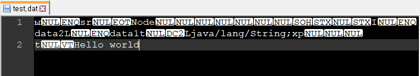

[Java] シリアライズ(直列化: Serializable)
こんにちは。明月です。
この投稿はJavaのシリアライズ(直列化: Serializable)に関する説明です。
シリアライズとは割当てしたクラス(インスタンス)をバイナリ化することをシリアライズ(直列化: Serializable)といいます。
クラスのメモリ割当てはクラス内部のメンバー変数で構成しています。(関数の場合はメモリに割当てないです。)メンバー変数はプリミティブタイプやクラスになっています。
すなわち、クラスのデータをファイルやソケット通信で転送するためにはByteタイプに変換しなければならないです。
その方法でJsonタイプに変換してクラスのデータをStringタイプに変換してバイナリ化する方法もあります。
実際に、最近、その方法でよく使います。でも、クラスをJsonタイプに変換するのは限界があるし、クラス内部の見えないデータ(private)まで完全に変換されたとは言えません。
それでこのシリアライズ機能を使ってクラスをバイナリ化するとクラスをデータを完全にbyteタイプに変換するのでよいでしょう。
でも、シリアライズよりJsonをよく使うのは下記とおりの理由があります。
1.シリアライズでバイナリ化になったデータは人間がそのままに見て理解しにくい構造になっています。つまり、逆シリアライズする前にはデータが正しいかの検証ができません。
でも、Jsonタイプになったデータは人間が見やすいし、プログラムを利用せずに修正も簡単です。逆にそれがJsonよりいいことがセキュリティにはよいでしょう。
2.プラットフォームの制約があります。Java言語でシリアライズしたデータはC#やPythonなどで逆シリアライズができません。
正確には出来ないことではないですが、データ漏れが発生します。
3.クラス修正があれば、以前シリアライズしたデータを逆シリアライズする時にデータ漏れが発生する可能性があります。
シリアライズの利点はセキュリティがよいし、クラス自体をバイナリするため、クラス状態をログにして把握することでよいでしょう。
import java.io.ByteArrayInputStream;
import java.io.ByteArrayOutputStream;
import java.io.File;
import java.io.FileInputStream;
import java.io.FileOutputStream;
import java.io.ObjectInputStream;
import java.io.ObjectOutputStream;
import java.io.Serializable;
// クラスをシリアルするためにSerializableのインターフェースを継承しなければならない。
class Node implements Serializable {
// Serializableインターフェースを継承するとserialVersionUIDを設定しなければならない。
private static final long serialVersionUID = 1L;
// Nodeクラスのメンバー変数
private String data1;
private int data2;
// プロパティ
public void setData1(String data1) {
this.data1 = data1;
}
public void setData2(int data2) {
this.data2 = data2;
}
public void print() {
System.out.println("data1 = " + data1 + " data2 = " + data2);
}
}
public class SerializableTest {
// 実行関数
public static void main(String[] args) {
// Nodeクラスを割当て
Node node = new Node();
// data1に「Hello world」のデータを格納
node.setData1("Hello world");
// data2に「10」のデータを格納
node.setData2(10);
// ファイルを設定
File file = new File("d:/work/test.dat");
// ファイルが存在すれば削除する。
if(file.exists()) {
file.delete();
}
// シリアライズするために、ストリームを取得する。
try (ByteArrayOutputStream baos = new ByteArrayOutputStream()) {
try (ObjectOutputStream oos = new ObjectOutputStream(baos)) {
// nodeインスタンスをシリアライズする。
oos.writeObject(node);
// Nodeクラスをシリアライズしたデータをバイナリタイプ(byte[])に変換する。
byte[] data = baos.toByteArray();
// バイナリ化(byte[])されたデータをファイルに格納する。
try (FileOutputStream stream = new FileOutputStream(file)) {
stream.write(data, 0, data.length);
}
}
} catch (Throwable e) {
e.printStackTrace();
}
// 逆シリアライズ
try (FileInputStream stream = new FileInputStream(file)) {
// ファイルからデータサイズを取得する。
byte[] data = new byte[(int)file.length()];
// ファイルからバイナリ(byte[])を取得する。
stream.read(data, 0, data.length);
// シリアライズするために、ストリームを取得する。
try (ByteArrayInputStream bais = new ByteArrayInputStream(data)) {
try (ObjectInputStream ois = new ObjectInputStream(bais)) {
// バイナリ(byte[])データをObjectタイプに変換する。
Object objectMember = ois.readObject();
// ObjectデータをNodeクラスにキャストする。
Node node1 = (Node) objectMember;
// Nodeクラスのprint関数を呼出す。
node.print();
}
}
} catch (Throwable e) {
e.printStackTrace();
}
}
}
上の例は「Node」クラスを割当てしてバイナリ化(byte[])にしてファイルに格納しました。

格納したデータをまた読み込んでクラスに変換しました。Jsonで一々にデータをStringタイプに変換することよりシリアライズ変換が簡単です。
上をみればシリアライズされたデータは構造把握が難しいです。
JavaでシリアライズされたことをC#で逆シリアライズしてみます。
using System;
using System.Runtime.Serialization.Formatters.Binary;
using System.IO;
namespace Example
{
//シリアライズクラス
//javaで作成したNodeクラスと同じ構造で作成する。
[Serializable]
class Node
{
//データタイプと変数名まで一致する。
private string data1;
private int data2;
public void Print()
{
Console.WriteLine($"data1 = {data1}, data2={data2}");
}
}
class Program
{
static void Main(string[] args)
{
// シリアライズフォーマッターを割当する。
var formatter = new BinaryFormatter();
// Javaで生成したシリアライズファイルを読み込む
using (var stream = new FileStream(@"d:\work\test.dat", FileMode.Open, FileAccess.Read))
{
// Nodeクラスに変換する。
var node = (Node)formatter.Deserialize(stream);
// Print関数を呼出す。
node.Print();
}
Console.WriteLine("Press any key...");
Console.ReadKey();
}
}
}
クラス構造を「string data1」と「int data2」を作りましたが、データタイプが違うというエラーが発生します。
ここまでJavaのシリアライズ(直列化: Serializable)に関する説明でした。
ご不明なところや間違いところがあればコメントしてください。
- [Java] PDFを出力する方法(itextpdf)2020/03/13 00:47:31
- [Java] ログライブラリ(log4j)を使う方法2020/03/12 00:54:39
- [Java] Jsonタイプのデータを使う方法(Gsonライブラリ)2020/03/11 00:30:15
- [Java] Base64をエンコード、デコードする方法2020/03/09 10:24:01
- [Java] cmdコマンドを実行するための方法2020/03/06 18:01:10
- [Java] メール(javax.mail)を発送する方法2020/03/05 20:07:49
- [Java] クラス複製(Clonable, Reflection)2020/03/05 00:03:19
- [Java] シリアライズ(直列化: Serializable)2020/03/03 00:03:33
- [Java] StringBuilderとStringBufferの差異2020/03/02 07:52:22
- [Java] Compare関数を使う方法2020/02/29 03:00:00
- [Java] 数字フォーマット(お金表示及び小数点以下表示)2020/02/28 03:00:00
- [Java] サーブレット環境で現在の実行ディレクトリを取得する方法2020/02/27 03:00:00
- [Java] 日本語をユニコードに変換して、ユニコードから日本語に変換する方法2020/02/26 03:00:00
- [Java] コンソールからデータを受け取る方法(System.in)2020/02/25 03:00:00
- [Java] Servlet環境でWebSocket通信中、HttpSessionを取得する方法2020/02/24 07:47:20
- [C#] 58. ウィンドウフォーム(Window form)を作成する方法、そしてウィンドウメッセージとキュー2021/10/27 20:35:44
- [Design pattern] 2-3. ブリッジパターン(Bridge pattern)2021/10/27 20:32:21
- [Design patten] 2-2. コンポジットパターン(Composite pattern)2021/10/27 20:30:54
- [Design pattern] 2-1. アダプターパターン(Adapter pattern)2021/10/26 19:12:40
- [Project design] プログラム最終テスト - ST(System test(Standard, Scenario))2021/10/26 19:10:07
- [Project design] プログラム結合テスト - IT(Integration test)2021/10/25 20:12:17
- [Python] Seleniumライブラリを使う方法(自動ウェブテスト、ウェブスクレイピング)2021/10/25 19:29:00
- [Design pattern] 1-5. プロトタイプパターン(Prototype pattern)2021/10/22 19:35:45
- [Project design] プログラム検証とテスト - Unitテスト2021/10/22 19:34:09
- [C#] 57. コーティング規約2021/10/21 18:57:02
- [C#] 56. 値の初期化及び基本データ値(default)を設定する方法、そして原始データのnull処理、?と??の使い方2021/10/21 18:54:41
- [C#] 55.namespaceとusing、そしてpartialの使い方2021/10/21 18:51:39
- [C#] 54. Reflection機能を使い方 - Attribute2021/10/20 19:29:31
- [Project design] プログラム制作(コーディング) - クラス作成方法2021/10/20 19:28:09
- [C#] 53. Reflection機能を使い方 - Propertyとevent2021/10/19 21:02:58